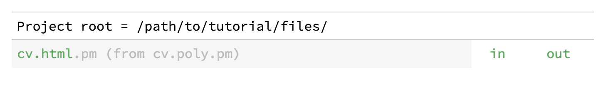
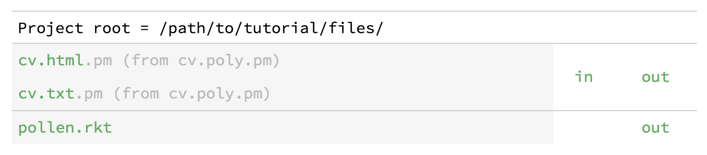
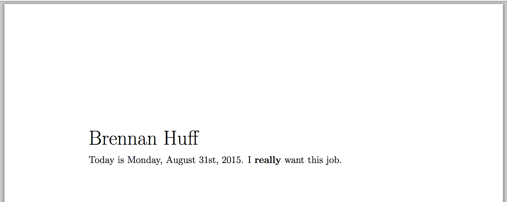

8 Fourth tutorial: multiple output targets
In previous tutorial projects, we’ve maintained a one-to-one relationship between source files and output files. In this tutorial, however, you’ll learn how to generate output in multiple formats from a single Pollen source file. You’ll learn about:
Setting up & using poly source files
The setup submodule
Branching tag functions
Using Pollen to generate binary data
If you want the shortest possible introduction to Pollen, try the Quick tour.
8.1 Prerequisites
I’ll assume you’ve completed the third tutorial and that you understand the principles of Pollen markup mode — creating source files, converting them to X-expressions, and then combining them with templates to make output files.
I’ll also assume that you’re comfortable with Attaching behavior to tags with tag functions, and that you can read and write basic Racket functions. Most of this tutorial is programming — easy programming, but programming nonetheless.
8.2 Optional reading: Multiple-output publishing and its discontents
Publishing documents in multiple output formats is a common need. A common solution is to write or render your document in one output format, and then convert to others as needed. And, for simple documents, this can work well enough.
But in general, writing your document directly in an output format, like Markdown or HTML, is a bad idea. Why? Because output formats are just that — output formats. They’re optimized to store the kind of information that the output device needs, not the information that the writer might want. Thus, using them as input formats means losing a huge amount of expressivity. I discussed this issue in The case against Markdown. Markdown is (too) often valorized as an authoring format, but it’s not expressive or semantic. It’s just a way of notating HTML, which is merely a boring and limited output format.
Converting a document from one input format to another is better — at least you get the benefit of using a more expressive input format. The problem is that richness doesn’t necessarily carry through as you convert between formats, which involves simplifying assumptions about how certain entities map to each other. Again, that’s not a knock on document converters like Pandoc — if your document is simple enough, and you’re satisfied with the assumptions made during the conversion process, great.
But if you’re not, you’re stuck.
8.2.1 And let’s not leave out programmability
The book is a program, right? Even if you love your input format, it’s probably not programmable. For instance, casting my eye across the input formats supported by Pandoc, I don’t see any that are natively programmable in a general-purpose language. So pick your favorite. If you like the expressiveness and efficiency that programming can provide, then you’re still stuck.
8.2.2 One source, multiple outputs
Instead, what if we rendered multiple document output formats from one programmable source file?
The software-development analogy is the problem of compiling code for multiple platforms. In that case, you would never take compiled code for one platform and try to “convert” it for use on another platform. And you would do everything possible to avoid maintaining separate sources for each platform. Rather, the ideal solution is to have one master source that can be compiled to each platform.
Before we go further, let’s be honest: though this has always been the ideal solution, it’s always been a difficult problem. Creating common source often means giving up some of the optimizations that might be available on a specific platform. The result is that cross-platform apps are often not as fast or sleek as their native-platform counterparts. (For proof, see every Java desktop app ever made.)
With documents, however, the good news is that we’re not creating software code, exactly — we’re creating data files. So as a technical matter, the problem is simpler.
Moreover, document output formats may be different in technical details, but there’s a lot of overlap between the ideas they encode — for instance, there’s always a way of specifying the font and point size, of specifying the page margins, and so forth. So it should, in principle, be possible to encode these entities in a high-level way in our source, abstracted from the output-level details.
8.2.3 Scribble vs. Pollen
By the way, I’m not claiming here that I’ve discovered the document-processing equivalent of the Higgs boson. Many tools offer multiple-output publishing, including Scribble: The Racket Documentation Tool, which is the foundation of Pollen.
Let me be clear: Scribble does a great job with this. If you have a project that fits with Scribble’s document model and rendering model, then it may be a better option than Pollen. Scribble can do lots of things that Pollen cannot.
So why prefer Pollen? Pollen is more open-ended. Though Pollen adopts Scribble’s syntax, it omits a lot of the heavy lifting that Scribble does on the back end. In one sense, this creates more work for the Pollen user, because certain things need to be recreated. But in another sense, it creates an opportunity, because it also removes the restrictions that Scribble needs to impose. You have maximum control from start to finish. Complex things are possible, but simple things remain simple.
8.3 Making a multiple-output project
A multiple-output project works pretty much the same way as a single-output project. The main difference is that you need to name your source files differently, update your "pollen.rkt" file to identify the output types you want to target, and alter your tag functions to handle those types.
8.3.1 The poly output type
In the previous tutorials, you saw how Pollen source files correspond to certain output file types by use of a double file extension: the first extension identifies the output-file type, and the second extension identifies the source-file type. So to end up with an output file called "document.html", using Pollen markup (indicated by the extension "pm"), you’d create a source file called "document.html.pm".
In a multiple-output project, a source file no longer has a one-to-one correspondence with a specific output type. To indicate this, we’ll instead use the special poly extension. So our "document.html.pm" will become "document.poly.pm".
The poly extension is the default, but can be changed for a project by overriding the default-poly-source-ext setting.
Let’s set up a new multi-output project for a résumé. Find a convenient directory and create a new poly source file as follows:
Yes, this is the worst résumé ever. Yours, I’m certain, would be better.
Other than the new poly extension, this file is no different than ones we’ve seen before. It starts with #lang pollen. It has some text and tags. And the pm extension indicates that we’re using Pollen markup.
You can, of course, use any Pollen source dialect you like for a poly source. I like Pollen markup best, of course, so we’ll use that here.
8.3.2 Poly sources in the project server
Start the project server in your tutorial directory. In your browser, you should see something like this:

“Why does it say "cv.html"? I thought we had a multi-output source file.” You do. But since we haven’t yet identified any render formats for a poly source file, Pollen assumes HTML. This also allows you to click through to see a result right away:
This proves that our source file is working. It looks dumb, however, because we haven’t defined any sensible tag functions. So let’s add a "pollen.rkt" file to our project directory as follows:
#lang racket/base (require racket/date txexpr) (provide (all-defined-out)) (define (get-date) (date->string (current-date))) (define (heading . elements) (txexpr 'h2 empty elements)) (define (emph . elements) (txexpr 'strong empty elements))
The get-date tag function will insert the current date as a string. The heading and emph tag functions will become typical HTML h2 and strong tags respectively. (If it’s unclear why this is so, this would be a good time to review Using Racket’s function libraries and Returning an X-expression.)
When we refresh the file in the project server, we’ll see something more reasonable:
Today is Friday, August 12th, 2022. I really want this job.
8.3.3 Adding output targets for poly sources
Though Pollen uses HTML as the default target for poly sources, if you only wanted HTML, you wouldn’t be using a poly source. So our next step will be to explicitly define the output targets that we want to associate with poly sources.
We’ll do this by overriding Pollen’s default-poly-targets value from within our "pollen.rkt".
8.3.3.1 Using the setup submodule
If you haven’t investigated it yet, pollen/setup offers overridable values that allow you to configure certain Pollen characteristics from within your "pollen.rkt" file. The example on that page, for instance, shows how to change the markup source extension and the Pollen command character.
The idea is that you add a setup submodule to your "pollen.rkt" file with a define statement for the value you want to override. Because we’re defining an override value, we drop the default- prefix and just call it poly-targets. Our value will be a list of file extensions denoting the targets. To start, let’s set our output formats to HTML and plain text, which we’ll denote with the list of extensions '(html txt).
#lang racket/base (require racket/date txexpr) (provide (all-defined-out)) (module setup racket/base (provide (all-defined-out)) (define poly-targets '(html txt))) (define (get-date) (date->string (current-date))) (define (heading . elements) (txexpr 'h2 empty elements)) (define (emph . elements) (txexpr 'strong empty elements))
Though you ordinarily don’t have to restart the project server to see changes in "pollen.rkt", you do for config values, because they’re stashed in a submodule. On restart, the project server will look like this:

What’s happened is that the project server now knows about our setup submodule in "pollen.rkt". It sees that we want to associate poly source files with HTML and plain-text targets, and accordingly shows us two entries in the project-server listing: "cv.html.pm" and "cv.txt.pm". As the adjacent messages indicate, these are not new source files on disk, but are rather derived from "cv.poly.pm".
If you click on "cv.html.pm", you’ll see the same HTML output that you saw before. If you click on "cv.txt.pm", however, you’ll see this:
(root (h2 Brennan Huff) |
|
Today is Friday, August 12th, 2022 . I (strong really) want this job. |
) |
Don’t panic. What we’re seeing is the X-expression generated from the "cv.poly.pm" file, but formatted as plain text rather than HTML. It looks wrong because we haven’t updated our project to handle plain-text output.
I’m glossing over the details of Submodules, but they’re one of Racket’s best features. What makes them useful is that they’re truly independent: you can load a submodule from a source file without running the main body of the file. Thus, tasks like this — setting configuration values — that would require separate files in other languages can be handled as submodules in Racket.
8.3.4 Adding support for another output format
The goal of this whole endeavor was to derive multiple output files from one source file. Thus, to make our résumé look right in plain text, we won’t change anything in the source file. But we will add a template and update our tag functions.
8.3.4.1 Adding a template for .txt
Templates should be familiar to you by now. As usual, the name of the template is template plus the relevant file extension, so in this case "template.txt.p". Add the file as follows:
What we’re doing here is converting the X-expression to text in a smarter way. We use require to bring in racket/list so we can use the flatten function.
To understand what the next line does, just read it from the inside out: “Take the doc export from the source file (which is an X-expression), flatten it into a list, filter with string? (creating a list that’s only strings) and apply the string-append function to these, resulting in one big string.” Which is exactly what we need for a plain-text file.
When you return to the project server and click on "cv.txt.pm", you’ll see the result:
Brennan Huff |
|
Today is Friday, August 12th, 2022. I really want this job. |
So far, so good. We’ve got legible plain text. But we’ve completely lost our formatting. Let’s fix that.
Have you ever used ◊(define-meta template ...) to specify a template from within a source file? You can still use this in a multiple-output project — just supply a list of templates rather than a single template. See get-template-for.
8.3.4.2 Branching tag functions
The other half of supporting a new output format is making the tag functions mean something sensible. For HTML, we used tag functions to map our heading markup tag to HTML’s h2 tag, and our emph tag to strong.
But plain text doesn’t have h2 or strong. So how about this: when we’re rendering to plain text, let’s make our heading tag mean UPPERCASE TEXT, and our emph tag will mean adding **surrounding asterisks**.
“So how do we make our tags mean one thing for HTML and a different thing for plain text?” We make branching tag functions that do different things depending on what the current rendering target for poly sources is.
That value, in fact, is stored in a Pollen parameter called current-poly-target. What we’re going to do is rewrite our tag functions to behave differently based on the value of this parameter. Update your "pollen.rkt" as follows:
#lang racket/base (require racket/date txexpr pollen/setup) (provide (all-defined-out)) (module setup racket/base (provide (all-defined-out)) (define poly-targets '(html txt))) (define (get-date) (date->string (current-date))) (define (heading . elements) (case (current-poly-target) [(txt) (map string-upcase elements)] [else (txexpr 'h2 empty elements)])) (define (emph . elements) (case (current-poly-target) [(txt) `("**" ,@elements "**")] [else (txexpr 'strong empty elements)]))
Here, we see that the heading and emph tag functions have been extended with branching behavior. I’ve chosen to use case because it’s compact. But you can use any branching structure you want (cond would be another obvious choice). In both places, we’ve added a branch for the txt output format. As promised, for heading we’re capitalizing the text, and in emph we’re adding double asterisks.
Could you use (html) rather than else for the second case in each tag function? Sure. Should you? It’s good practice to write branching conditionals with an else because it guarantees that there’s always a result. If case (or cond) doesn’t find a matching clause, it returns void, which can be surprising or annoying. But do what you like. I’m not the else police.
Now when we return to the project server and refresh "cv.txt.pm", we see our groovy plain-text formatting:
BRENNAN HUFF |
|
Today is Friday, August 12th, 2022. I **really** want this job. |
By the way, the reason I included get-date in this tutorial is to illustrate that not every function in a multi-output project necessarily needs to branch. (Static variables probably wouldn’t either, though they could.) It produces a string, which is usable in either HTML or plain text. We just need to add branching to the tag functions that need context-specific behavior.
8.3.5 Adding support for LaTeX output
To add more output formats, we just repeat the same fandango: add a new rendering target to our setup submodule, update any branching tag functions, and add a template for the new format.
Let’s see how fast we can add support for LaTeX output. Here’s the updated "pollen.rkt":
#lang racket/base (require racket/date txexpr pollen/setup) (provide (all-defined-out)) (module setup racket/base (provide (all-defined-out)) (define poly-targets '(html txt ltx))) (define (get-date) (date->string (current-date))) (define (heading . elements) (case (current-poly-target) [(ltx) (apply string-append `("{\\huge " ,@elements "}"))] [(txt) (map string-upcase elements)] [else (txexpr 'h2 empty elements)])) (define (emph . elements) (case (current-poly-target) [(ltx) (apply string-append `("{\\bf " ,@elements "}"))] [(txt) `("**" ,@elements "**")] [else (txexpr 'strong empty elements)]))
Notice that we added a ltx extension to the list of poly-targets. We also updated heading and emph to use comparable LaTeX commands.
Then a "template.ltx.p":
Here, all we did was take our "template.txt.p" (which turned an X-expression into a string) and wrap it in the bare minimum LaTeX boilerplate. (Confidential to LaTeX fans: please don’t write to complain about my rudimentary LaTeX. It’s a tutorial. I trust you to do better.)
Restart the project server to reify the changes to poly-targets. When you restart, you’ll see a link for "cv.ltx.pm". Click it and you’ll get this:
\documentclass[a4paper,12pt]{letter} |
\begin{document} |
{\huge Brennan Huff} |
|
Today is Friday, August 12th, 2022. I {\bf really} want this job. |
|
\end{document} |
That’s it. LaTeX achieved.
8.3.6 Adding support for PDF output
Still not satisfied? Still want to see one more cute Pollen trick?
OK, you win. Let’s not stop at LaTeX — let’s go all the way to PDF using the LaTeX PDF converter, known as pdflatex. (This is a command-line program that must be installed on your machine for this trick to work. I made this example on Mac OS 10.9.5.)
How do we do this? We’ll follow the pattern we’ve already established, but with one wrinkle. To make a PDF, we need to generate LaTeX output first. So we actually don’t need to add new branches to our tag functions — we’ll just let PDF piggyback on our LaTeX branches. The big difference will be in the template, where instead of returning a LaTeX source file, we’ll send it through pdflatex and get the binary PDF file that results.
First, we update "pollen.rkt":
#lang racket/base (require racket/date txexpr pollen/setup) (provide (all-defined-out)) (module setup racket/base (provide (all-defined-out)) (define poly-targets '(html txt ltx pdf))) (define (get-date) (date->string (current-date))) (define (heading . elements) (case (current-poly-target) [(ltx pdf) (apply string-append `("{\\huge " ,@elements "}"))] [(txt) (map string-upcase elements)] [else (txexpr 'h2 empty elements)])) (define (emph . elements) (case (current-poly-target) [(ltx pdf) (apply string-append `("{\\bf " ,@elements "}"))] [(txt) `("**" ,@elements "**")] [else (txexpr 'strong empty elements)]))
You can see that we’ve simply added the pdf extension in three places: in the list of poly-targets, and to the ltx branches of our tag functions. (In a case statement, putting multiple values in a branch means “match any of these values.”) Easy.
The template, not as easy:
◊(require racket/file racket/system) ◊(define latex-source ◊string-append{ \documentclass[a4paper,12pt]{letter} \begin{document} ◊(apply string-append (cdr doc)) \end{document}}) ◊(define working-directory (make-temporary-file "pollen-latex-work-~a" 'directory)) ◊(define temp-ltx-path (build-path working-directory "temp.ltx")) ◊(display-to-file latex-source temp-ltx-path #:exists 'replace) ◊(define command (format "pdflatex -output-directory ~a ~a" working-directory temp-ltx-path)) ◊(unless (system command) (error "pdflatex: rendering error")) ◊(let ([pdf (file->bytes (build-path working-directory "temp.pdf"))]) (delete-directory/files working-directory) pdf)
I know that only the serious nerds are still with me, but let’s review what’s happening here.
First, we use "template.pdf.p" rather than "template.pdf" for our template name. This is the Null (.p extension) in use. Operating systems assume that files with a ".pdf" extension contain binary data, not text. The ".p" extension just shields the file from this assumption. It will simply be converted to "template.pdf" on render.
A quick narrative of the rest:
◊(require racket/file racket/system)
We need racket/file for display-to-file and file->bytes; we need racket/system for system (to use the command line).
◊(define latex-source ◊string-append{ \documentclass[a4paper,12pt]{letter} \begin{document} ◊(apply string-append (cdr doc)) \end{document}})
This is the same as our "template.ltx.p" from before, but stored in a variable. The string-append is needed here because the curly braces create a list of strings, and we want a single string.
◊(define working-directory (make-temporary-file "pollen-latex-work-~a" 'directory)) ◊(define temp-ltx-path (build-path working-directory "temp.ltx")) ◊(display-to-file latex-source temp-ltx-path #:exists 'replace)
Create a temporary working directory (because pdflatex creates a bunch of ancillary log files) and write our LaTeX source to a "temp.ltx" file.
◊(define command (format "pdflatex -output-directory ~a ~a" working-directory temp-ltx-path)) ◊(unless (system command) (error "pdflatex: rendering error")) ◊(let ([pdf (file->bytes (build-path working-directory "temp.pdf"))]) (delete-directory/files working-directory) pdf)
Issue the pdflatex command, using our newly created "temp.ltx" as the source. Finally, pick up the PDF that was created, delete the temporary directory, and return it as a byte string (= binary data).
Restart the project server and click on "cv.pdf.pm", and you’ll see the rendered PDF right in the browser:

As usual, you can change the content in "cv.poly.pm", or the tag functions in "pollen.rkt", and refresh the PDF in the project server to see the result.
8.4 Using raco pollen render with poly sources
Poly source files work as usual with raco pollen render.
You can give it the name of an output file, and it will figure out that a poly source file should be used:
> raco pollen render cv.pdf |
rendering: /cv.poly.pm as /cv.pdf |
> raco pollen render cv.txt |
rendering: /cv.poly.pm as /cv.txt |
If you give it the name of a poly source file without further specification, it will generate output using the first format on your list of poly-targets (in this case HTML):
> raco pollen render cv.poly.pm |
rendering: /cv.poly.pm as /cv.html |
To generate output from a poly source for a particular target, use the -t or --target flag to specify:
> raco pollen render -t txt cv.poly.pm |
rendering: /cv.poly.pm as /cv.txt |
> raco pollen render --target pdf cv.poly.pm |
rendering: /cv.poly.pm as /cv.pdf |
8.5 Fourth tutorial complete
True, I originally designed Pollen with HTML output in mind. But this tutorial gives you a sense of how its model for converting source files to output files is flexible and open-ended. If you’re not afraid of a little programming — made easier by having all the facilities of Racket available within your project — you can generate any text or binary output from a Pollen source file.